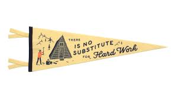

I born and brought in a small state called Kerala in India. Right from my school days, I always had a flair for science subjects. Throughout my course of journey in school, I have striven hard to maintain a good score in all subjects, especially science subject. As the result, I was one among the top 10 percent of the class. Right after my high school graduation, I got the opportunity to come to the US. Meeting new people and immersing in a foreign culture was a different experience in my life. Taking three to four classes at a community collge while working part time at Walmart Pharamcy. After completed all the prerequisites, moved to Texas Tech University for my undergradate degree in Clinical Lab Science. Right after I finished my degree, I got a job offer from a local county hospital as a Medical Technologist.After I pursued my Bachelors in Clinical lab science, got the opportunity to work in a county hospital as a Microbiology Technologist. From my experience, encountered a lot of medical condition associated with bacterial, viral, fungal, parasitic infections and find out the organisms using latest PCR techniques, advanced immunoassay techniques and plate reading. In addition, I experience patients from medically underserved areas and immunocompromised patients infected with rare microorganism, and by using biochemical tests to identify the organism and susceptibility test to figure out the antibiotic treatment, which helped providers to treat the infections as quickly as possible.